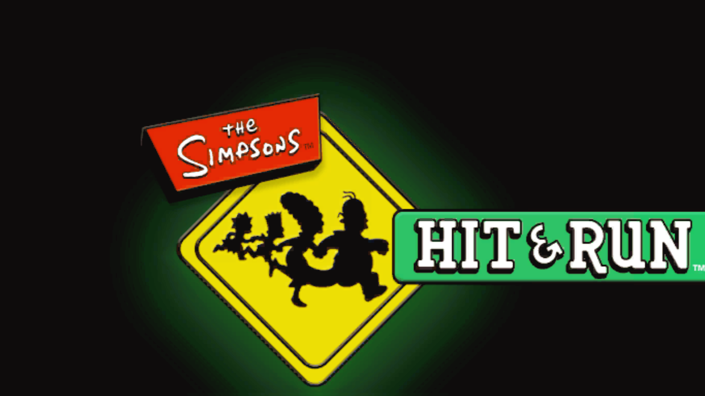
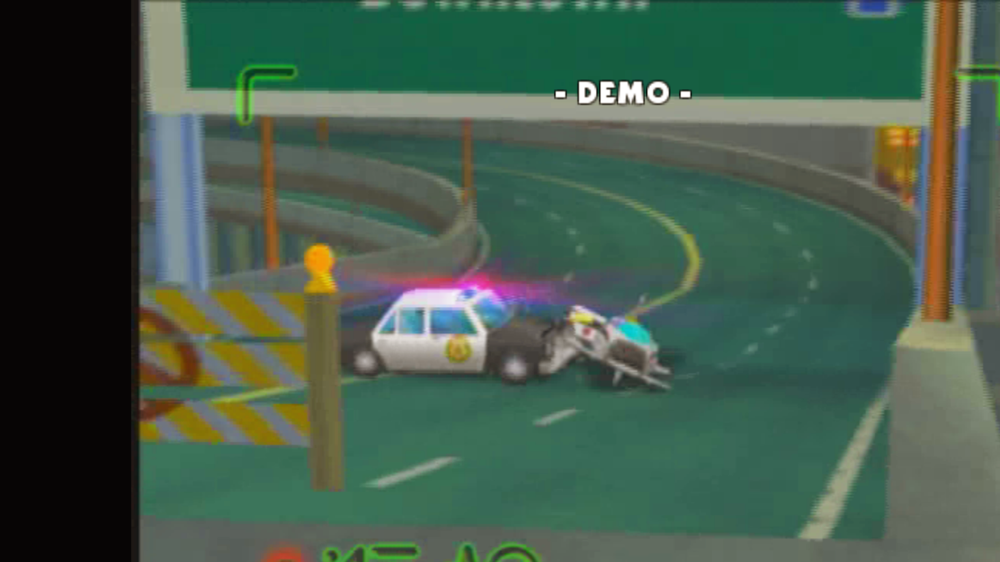

XDK 5455 signatures bootstrapped
Seed scans from nearby XDK builds were merged, validated against XbSymbolDatabase, then signed from this binary. Overlap check: 74 agreements and zero disagreements.
Original Xbox → native PC · static recompilation
A fan-made bring-up of the 2003 original Xbox game as native Windows code. The current build reaches the title screen and attract-mode demo.
Bring-up build: promising, unstable, and not ready to call playable.

The hard first step is done: this title's XDK 5455 libraries were identified, the full executable was translated, and the native build boots into real game presentation instead of stopping at startup traps.
Static recompilation turns the Xbox executable into native code before it runs. Xbox library calls are matched to PC implementations for graphics, sound, input, files, and system services.
That makes enhancements possible later, but the first job is correctness: identify the exact XDK build, prove its data layouts from the binary, and fix one boot blocker at a time.
Captured from the local Windows build during automated smoke testing.

Seed scans from nearby XDK builds were merged, validated against XbSymbolDatabase, then signed from this binary. Overlap check: 74 agreements and zero disagreements.
Codegen translated 20,674 functions. The resulting Windows executable and game-code DLL link successfully.
A null-safe DSound AddRef hook, restored D3D data recipes, proven VBlank layout offsets, and newly identified Bink functions moved boot through sound and D3D12 setup.
Screenshots confirm the attract-mode demo rendering in 3D and keyboard input returning to the title logo.
The next work is less visible than a title screen, but it decides whether the port can become stable and actually playable.
This is an unofficial fan project by VetTV Studios. It is not affiliated with or endorsed by the rights holders or original developers of The Simpsons: Hit & Run, The Simpsons, Microsoft, or Xbox.
You must supply a legally acquired copy of the original Xbox game. This project does not provide ISOs, XBEs, extracted assets, keys, or compiled game downloads.
Screenshots on this page were captured locally from the team's own dump for development documentation.
Built with respect for the upstream XboxXBERecomp and XbSymbolDatabase projects.